FocusQuest 原画アニメーション一覧
男性プレイヤー10体・女性プレイヤー10体・敵3体。原画コマをそのまま切り替える方式。プレビューは確認用に繰り返します。
魔剣士 男女版 v011
各キャラクター：走行8原画、通常攻撃8原画、スキル12原画。画像変形や中間画像を使わず原画を切り替えて再生します。
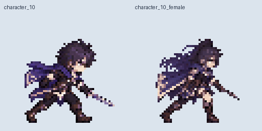
ガンナー 男女版 v010
各キャラクター：走行8原画、通常攻撃8原画、スキル12原画。画像変形や中間画像を使わず原画を切り替えて再生します。
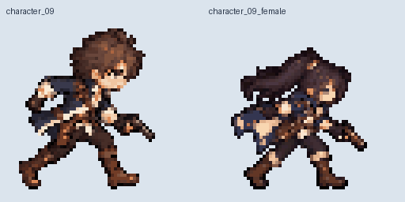
弓使い・魔法使い 男女版 v009
各キャラクター：走行8原画、通常攻撃8原画、スキル12原画。画像変形や中間画像を使わず原画を切り替えて再生します。
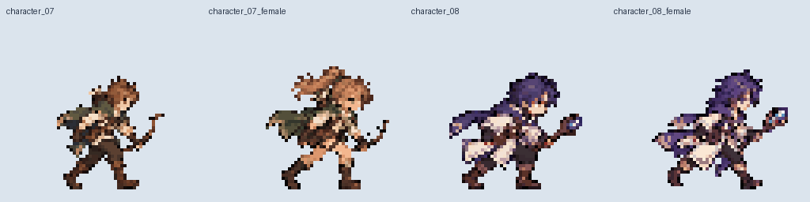
女性版6職業 v008
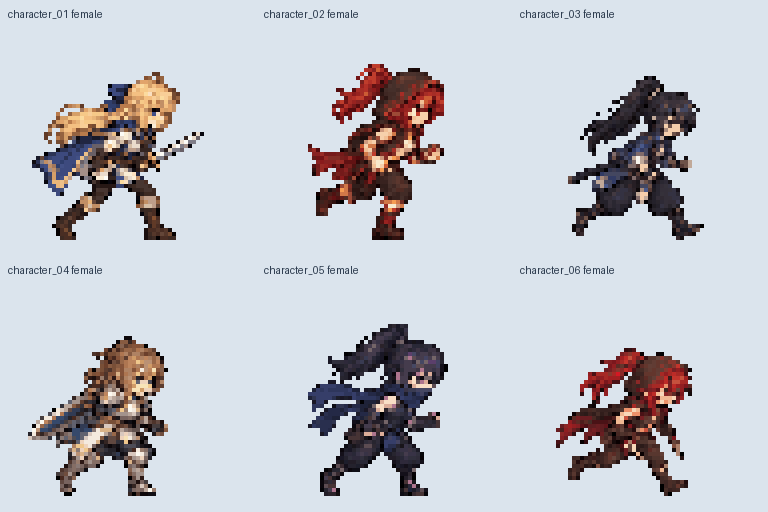
参照画像の女性6体を使用。原画だけを切り替えて再生します。男性版・敵の素材はv007のまま保持しています。
character_01 女性版 · 剣士
走行
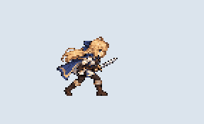
8原画 · 128×128px · 24fps
原画一覧 · 再生データ停止して縦斬り
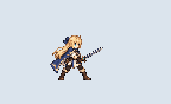
8原画 · 128×128px · 24fps
原画一覧 · 再生データ蓄力して斬撃波
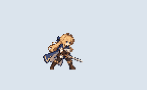
8原画 · 128×128px · 24fps
原画一覧 · 再生データ待機（構え原画を保持）
1原画 · 128×128px · 24fps
原画一覧 · 再生データ走行→停止→攻撃
16原画 · 128×128px · 24fps
原画一覧 · 再生データ走行→停止→スキル
16原画 · 128×128px · 24fps
原画一覧 · 再生データcharacter_02 女性版 · 拳闘士
走行
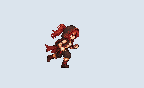
8原画 · 128×128px · 24fps
原画一覧 · 再生データ停止して連続パンチ
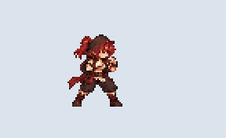
8原画 · 128×128px · 24fps
原画一覧 · 再生データ蓄力して回転蹴り
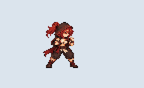
8原画 · 128×128px · 24fps
原画一覧 · 再生データcharacter_03 女性版 · 侍
走行
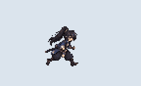
8原画 · 128×128px · 24fps
原画一覧 · 再生データ停止して居合
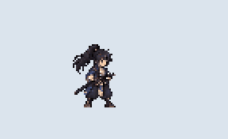
8原画 · 128×128px · 24fps
原画一覧 · 再生データ蓄力して乱舞
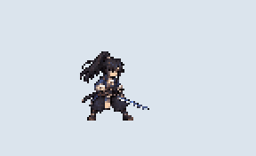
8原画 · 128×128px · 24fps
原画一覧 · 再生データcharacter_04 女性版 · 重騎士
走行
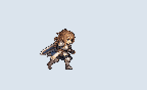
8原画 · 128×128px · 24fps
原画一覧 · 再生データ大剣の振り下ろし
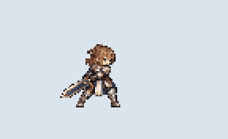
8原画 · 128×128px · 24fps
原画一覧 · 再生データ蓄力して薙ぎ払い
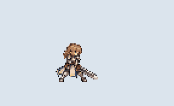
8原画 · 128×128px · 24fps
原画一覧 · 再生データcharacter_05 女性版 · 忍者
走行
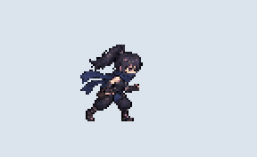
8原画 · 128×128px · 24fps
原画一覧 · 再生データ手裏剣投げ
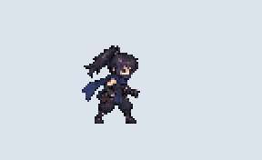
8原画 · 128×128px · 24fps
原画一覧 · 再生データ印・瞬間移動・短刀突き
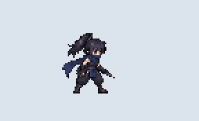
8原画 · 128×128px · 24fps
原画一覧 · 再生データcharacter_06 女性版 · アサシン
走行
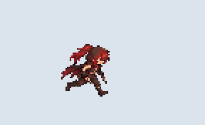
8原画 · 128×128px · 24fps
原画一覧 · 再生データ短剣で突く
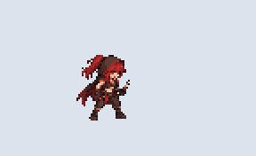
8原画 · 128×128px · 24fps
原画一覧 · 再生データ蓄力してクリティカル
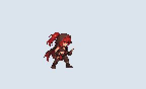
8原画 · 128×128px · 24fps
原画一覧 · 再生データ敵のやられモーション v007
左向きの敵が右へノックバックし、粒子になって消滅。ゲームでは1回再生し、透明原画で終了します。プレビューは確認用に繰り返します。
slime
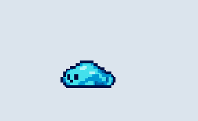
8原画 / 1.25秒 / 右へ44px
原画一覧 · 再生データgoblin
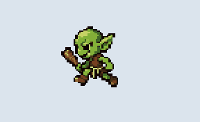
8原画 / 1.25秒 / 右へ44px
原画一覧 · 再生データdracula
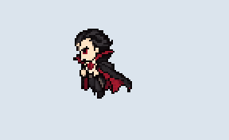
8原画 / 1.25秒 / 右へ44px
原画一覧 · 再生データcharacter_01 · 新作剣士モーション v005
走行8原画・縦斬り8原画・蓄力斬撃12原画。待機はv001を維持。原画だけを切り替えて再生します。

character_06 · アサシン v006
走行8原画・短剣の突き8原画・蓄力クリティカル12原画。右向き128px、原画切り替えで再生します。